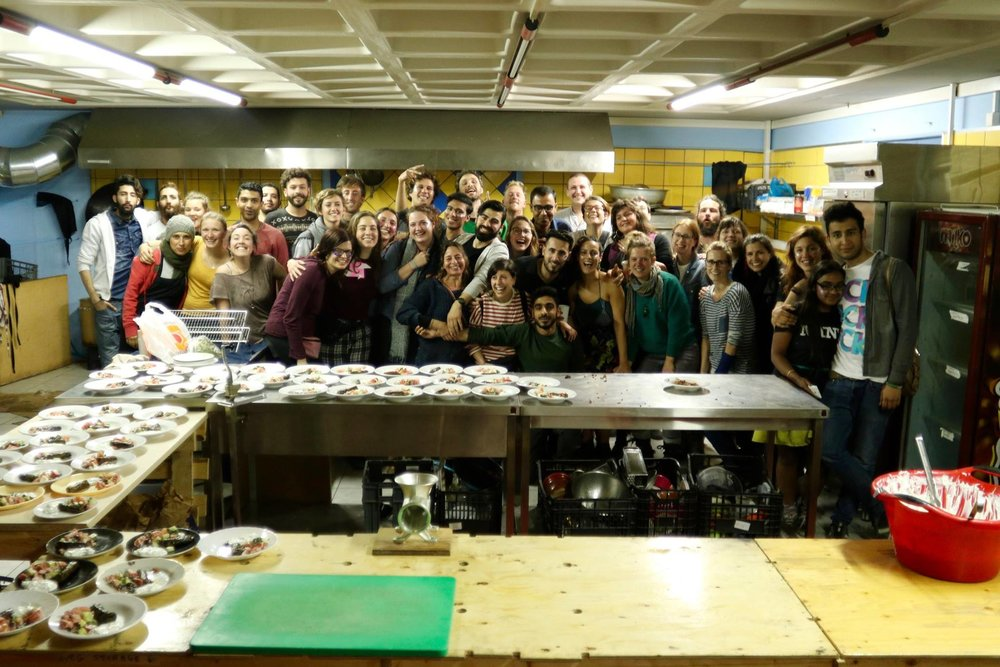

ABOUT US
KHORA is a humanitarian co-operative foundation based in Athens, Greece. We are a group of experienced volunteers who have been working for other organisations around Europe focusing on the provision of services for refugees. We are responding to this humanitarian crisis that is affecting those forced from their homes by war, poverty and climate change.
Khora was created by a collective of individuals who met on Lesvos while working with Skipchen and Better Days For Moria and decided to bring our skills together. As individuals we have been on the ground in Calais, Serbia, Lesvos and Athens since the refugee crisis escalated in 2015.
As a group our skill set and experience is wide ranging and includes international development, project management, mental health, support work, building and teaching. Together we possess the skills necessary for establishing successful and sustainable projects that help thousands of refugees living far away from their home countries.
OUR Name
Khora is a multifaceted word with many meanings. The meaning we take from it is a ‘a radical otherness that “gives place” for being’. The current EU border system creates the illusion of the ‘other’. It divides humans into categories of those who have freedom of movement and those who do not, those who have valuable lives and those who do not, those who have the right to make choices and those who do not. We stand in opposition to this system and want to create a space in which all people can come together, where everyone is ‘other’ in standing against this mode of oppression and thus equal.
Where we are from
We are an international collective and our group changes frequently. The current co-operative is made up of people from Afghanistan, Baluchistan, Belgium, Cameroon, Canada, Denmark, France, Greece, Germany, Iceland, Iran, Iraq, Morocco, Portugal, Spain, Switzerland, Syria, the UK and the USA. Some members of our group have freedom of movement but some do not. In the knowledge that this could create a difficult power dynamic within our community, we work to ensure that everyone is treated equally while acknowledging that some people have more pressing priorities than the daily work schedule.
Our background
The original collective formed after meeting on Lesvos. We came together from Better Days for Moria, No Borders Camp, Skipchen and the refugee community.
Better Days for Moria was a self-organised camp outside Moria registration (now detention) camp. They provided clothes, food, medical care, accommodation, legal support and information to the people arriving by boat from Turkey who would otherwise have been homeless, as there was no state provision for them.
No Borders Camp was a self-organised camp in Mytilene which provided clothes, food, accommodation and solidarity to people arriving on Lesvos and also supported them while they waited to move on.
Skipchen was a waste food kitchen from Bristol, England, which came to Lesvos in November 2015 and provided food in the Better Days for Moria Camp.
Many of the people from the refugee community we have worked with in Athens, we also worked with on Lesvos and these are long standing and important relationships for us.
We come from a diverse range of cultural and political backgrounds and traditions. Instead of seeing this as a negative which could divide us, we view it as a positive model of collective co-working. We have all made compromises in our individual political and social ideals to work together and this has been an enriching learning process. In the context of this situation the ideas on which we all agree are the most important - that all human beings have a right to fair and equal treatment and that the current EU system is inherently violent towards particular groups.
MOTIVE
We believe in freedom of movement for all. We stand in solidarity with displaced people. Everyone has the right to choice, autonomy, dignity, community and the ability to access the basic means to live. We recognise that this situation has been created and perpetuated by governments and corporations who are profiting from it and we stand in opposition to them and in solidarity with all affected by it. Our aim is to create a space for international activists to come together for open discussion and dialogue. We want to reclaim our lives from the system and collectively create alternatives.
HOW WE ORGANISE
We are a self-organised collective of individuals who aim to work in a creative, flexible and non-dogmatic way.
We are registered as a Greek co-operative.
We work non-hierarchically using consensus decision making.
We have a variety of working groups that organise separate aspects of the project who feed into a weekly assembly.
We encourage everyone involved in Khora to become familiar with this way of organising and to be part of the process.
The way we organise is important to us as it inherently challenges the systems that created this situation, rather than replicating or reinforcing them. We are not an NGO, a charity or associated with government bodies.
COMMUNICATION
We aim to be completely transparent. If you or your group have any questions about who we are or what we are here to do, then please ask us. This can either be formally in an assembly, or individually in person or online. If you or your group decide not to work with us then please let us know why. We accept criticism and will try to work on any points you or your group wants to raise. We have open assemblies once a month on a Tuesday evening at 8 p.m. and advertise the dates at the community centre and on Facebook.